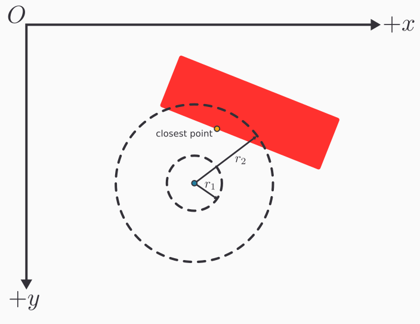

Because our game is an interactive program that updates in real time, we will need a sort of abstraction that handles updating the game in real time while also receiving user input. It achieve this goal we will introduce the idea of a game loop. At a high level a game loop will involve the following steps
where the "game state" is any sort of abstract representation of the game in the moment. The game state could for example involve the positions and velocities of the players and ball.
When the game responds to user input, it could for example update the velocities of the players. During the update phase, the game could then move all the players and ball in the direction of their velocity or update them in accordance with physical laws. Finally, with the updated state, the game is rendered to the screen, and the process starts over. This overview forms the basis of an interactive video game.
With the game loop covered at a high level, we will make an interface called GameScene that captures each stage of the game loop so that it can inevitably be driven by a sort of looping construction. In the GameScene, there will be methods that handle keyboard events as follow
/**
* The method called when it is detected that a key on the keyboard
* has been depressed
* @param e a description of the keystroke that occurred
*/
void onKeyPressed(KeyEvent e);
/**
* The method called when it is detected that a key on the keyboard
* has been released
* @param e a description of the keystroke that occurred
*/
void onKeyReleased(KeyEvent e);
The KeyEvent object is from javafx.scene.input.KeyEvent, and it is no coincidence that the method signatures matches that of JavaFX's key event listeners. Whenever JavaFX detects a key press, we will pass that key event to these methods for the game scenes implementing GameScene to handle. Implementing these methods allow for custom game logic to execute in response to keyboard events.
Next, any game scene implementing GameScene needs to specify how the game state should be updated. Thus we will include the following method in the interface
/**
* The method called to progress the game state
* @param currentTime the time in nanoseconds relative to an arbitrary
* start time.
*/
void updateState(long currentTime);
This method will be called by the game loop to advance the game state which typically involves updating the position of game objects. We need to to pass in a currentTime: long to decouple the game updates from the computer hardware's power. Consider two computers with two different CPUs. On the faster CPU the game loop will execute at a higher frequency than the slower computer which means the faster CPU will update the game more often. If implemented without care, the game may run at a higher speed on the faster computer giving an inconsistent experience across different hardwares. To remedy this issue, every time the game is updated, the time in nanoseconds must be supplied so that the game can determine the proper way to update the state so that the game state is tied to time that has passed and not hardware power. Thus even if one were to play the game on different computers, the experience will feel relatively similar as one's experience with time does not often change.
Finally the GameScene needs a way to render the scene which means the following method must implemented
/**
* The method called to render the game scene to a canvas
* @param canvas the canvas to draw the scene on
*/
void render(Canvas canvas);
The Canvas object is from javafx.scene.canvas.Canvas and any sort of custom render code for the GameScene should perform all draw operations on this Canvas.
Finally, as a convenience method GameScene should have a default method called generateRenderableComponent(int, int) -> Canvas. This method essentially creates a Canvas object for us and configures it to handle keyboard inputs. It will take two integers which parametrizes the returned Canvas's width and height, respectively. A Canvas will first be created and its key pressed handler will be attached to the onKeyPressed method in GameScene. Similarly, the key released handler will be attached to the onKeyReleased method in GameScene. Thus all keyboard events on the Canvas will be dispatched to class implementing GameScene. However in the current state, the Canvas will not accept keyboard inputs as it is not "focused." The Canvas can received keyboard inputs by notifying JavaFX that the Canvas can be "focused" on. Then we just request the focus be on the Canvas and return the Canvas object. In code the method would resemble
/**
* Creates a Canvas object configured to be compatible with the GameScene
* interface
* @param width the Canvas's width in pixels
* @param height the Canvas's height in pixels
*/
default Canvas generateRenderableComponent(int width, int height) {
Canvas canvas = new Canvas(width, height);
canvas.setOnKeyPressed(this::onKeyPressed);
canvas.setOnKeyReleased(this::onKeyReleased);
canvas.setFocusTraversable(true);
canvas.requestFocus(true);
return canvas;
}
Finally, GameScene should extend Serializable. We will impose this constraint so that later in the development of the game, we have the capability of saving game scenes on the drive and even transmit game scenes over the network.
In whole the interface should look as such
public interface GameScene extends Serializable {
void updateState(long currentTime);
void onKeyPressed(KeyEvent e);
void onKeyReleased(KeyEvent e);
void render(Canvas canvas);
default Canvas generateRenderableComponent(int width, int height) {
Canvas canvas = new Canvas(width, height);
canvas.setOnKeyPressed(this::onKeyPressed);
canvas.setOnKeyReleased(this::onKeyReleased);
canvas.setFocusTraversable(true);
canvas.requestFocus();
return canvas;
}
}
The GameScene sets the foundation for the different phases a game goes through. We now need to drive it with a looping construct. Rather than use a naive while loop, we will make use of the AnimationTimer in JavaFX so as to not lock up the main thread of our program with the game loop. We will make a class called GameLoop which extends AnimationTimer. In order to extend AnimationTimer the class must override the handle method which is called every time the AnimationTimer "ticks" which occurs at a fairly high frequency. First, however, the class GameLoop has two fields: a gameScene: GameScene and a canvas: Canvas. The GameScene informs the GameLoop what scene it needs to drive, and the Canvas informs the GameLoop where the rendering should take place. The canonical constructor should be used to fill these fields. As for the handle from AnimationTimer, we simply need to call updateState and then render on gameScene every time the AnimationTimer pulses/ticks. In code the handle function would resemble
public class GameLoop extends AnimationTimer {
private GameScene gameScene;
private Canvas canvas;
// --snip--
/**
* The method called periodically by AnimationTimer
* @param now the time in nanoseconds
*/
public void handle(long now) {
gameScene.updateState(now);
gameScene.render(canvas);
}
}
Now, whenever we would like to render a GameScene, we simply instantiate an instance of some GameScene, create a Canvas from it using generateRenderableComponent, pass both objects into the GameLoop, and run the start method on the AnimationTimer which GameLoop inherits.
The work up to this point is represented diagrammatically below.
To make computation easier we will develop a helper class called Vec2d. This class represents 2 dimensional vectors and has methods that can execute common vector operations. In this class there are 2 fields, both of which are doubles: x and y. For brevity assume that the canonical constructor is used and setters and getters for x and y are implemented. Mathematically, an instance of Vec2d will encode the vector $\left\langle x, y \right\rangle$.
First, we will define a method scale which takes a double c and returns a new vector that is a scaled version of the current vector. To do this, we simply multiply each component of the vector by c.
/**
* Scales a vector by a constant multiple
* @param c the constant multiple
* @return a scaled vector
*/
public Vec2d scale(double c) {
return new Vec2d(x*c, y*c);
}
We will also define a method add which adds two vectors and returns the result. It takes a Vec2d called other, and adds this with other, component-wise.
/**
* Adds the current vector the another vector
* @param other the vector to add with
* @return the vector sum
*/
public Vec2d add(Vec2d other) {
return new Vec2d(
this.x + other.x, this.y + other.y
);
}
Similarly subtraction is defined but the method is called sub and the components are subtracted as opposed to added.
/**
* Computes the difference between the current vector with another vector
* @param other the vector to subtract with
* @return the vector difference
*/
public Vec2d sub(Vec2d other) {
return new Vec2d(
this.x - other.x, this.y - other.y
);
}
It will also be convenient to compute dot products, so we will also create a method dot that takes a Vec2d called other and returns a double. Given two vectors $\left\langle x, y \right\rangle$ and $\left\langle x', y' \right\rangle$ the dot product is $x \cdot x' + y \cdot y'$.
/**
* Computes the dot product between the current vector and another vector
* @param other the other vector
* @return the dot product
*/
public double dot(Vec2d other) {
return this.x * other.x + this.y * other.y;
}
The method mag should simply return a double representing the magnitude or length of the current vector. From linear algebra the magnitude of vector $\mathbf{v}$ is $\sqrt{\mathbf{v} \cdot \mathbf{v}}$ which conveniently can be implementing using dot.
/**
* Computes the length of the current vector
* @return the length of the vector
*/
public double mag() {
return Math.sqrt(this.dot(this));
}
We will also implement a method projectOnto which takes another Vec2d and returns a Vec2d representing the projection. Thus a.projectOnto(b) in mathematical notation would be $\text{proj}_\mathbf{b}\mathbf{a}$. Using linear algebra, this can be computed with
$$ \text{proj}_{\mathbf{b}}\mathbf{a} = \left(\mathbf{a} \cdot \frac{\mathbf{b}}{\lVert \mathbf{b} \rVert}\right) \mathbf{b} $$
/**
* Computes the projection of the current vector onto another vector
* @param other the vector to project onto
* @return the projection vector
*/
public Vec2d projectOnto(Vec2d other) {
Vec2d unit = other.normalize();
return unit.scale(unit.dot(this));
}
Along with projections, we should allow for computing the "rejection". The method rejectOn takes a Vec2d and returns another Vec2d. So a.rejectOn(b) would be the "rejection of $\mathbf{a}$ on $\mathbf{b}$". We will define this rejection as $\mathbf{a} - \text{proj}_\mathbf{b}\mathbf{a}$ which is a vector perpendicular to $\mathbf{b}$ as opposed to being parallel like the projection.
/**
* Compute the rejection of the current vector on another vector
* @param other the vector to reject on
* @return the rejection vector
*/
public Vec2d rejectOn(Vec2d other) {
return this.sub(this.projectOnto(other));
}
Finally, the last method to be implemented is rotate which takes a double called angle in radians. It returns a Vec2d that is the rotation of the current vector, rotated about the origin by angle. This action can be done using a rotation matrix
$$
\begin{bmatrix}
\cos \theta & -\sin \theta \\
\sin \theta & \cos \theta
\end{bmatrix}
\begin{bmatrix} x \\ y \end{bmatrix}
\ = \
\begin{bmatrix}
x\cos\theta-y\sin\theta \\
x\sin\theta+y\cos\theta
\end{bmatrix}.
$$
For more information see https://en.wikipedia.org/wiki/Rotation_matrix which is where the above formula came from.
/**
* Rotates the current vector about the origin
* @param angle the angle to rotate by in radians
* @return a rotated vector
*/
public Vec2d rotate(double angle) {
double c = Math.cos(angle);
double s = Math.sin(angle);
return new Vec2d(x*c - y*s, x*s + y*c);
}
Now with two dimensional vectors implemented, we will use mathematical notation for vectors when convenient with the understanding that they can easily converted into an instance of Vec2d.
To detect collisions between different types of shapes, we will make an interface Collider with the following form.
public interface Collider {
/**
* Determines whether two Colliders intersect each other
* @param other the other collider with which to check for an intersection
* @return a boolean that determines if the current Collider intersects
* with other
*/
boolean collide(Collider other);
/**
* Gets the position of the Collider
* @return the position of the Collider
*/
Vec2d getPosition();
/**
* Sets the position of the Collider
* @param position the new location of the Collider
*/
void setPosition(Vec2d position);
}
Notice that we are making use of Vec2d to describe a physical property like position. In any event, the method of particular interest is collide which every class implementing Collider must create. This method is used to check collision between two Collider objects.
The first Collider we will create will be a RectangleCollider. A RectangleCollider is defined by the position of its top-left corner which we will call the origin: Vec2d. The collider is also defined by the following doubles: width, height, and angle. Note that angle should be in radians and it describes how much the rectangle is rotated about its origin. See the figure below for an illustration. In the image $(x, y)$ is origin and $\theta$ is angle.

The canonical construction should be made, and setters and getters for the attributes should be made. For setPosition and getPosition from Collider, the origin should be taken as the RectangleCollider's position.
The RectangleCollider class should also have a helper method computeVerticesAndBasis which returns an array of Vec2ds. The returned array will be composed of 6 Vec2ds. The 4 vertices of the rectangle, starting at the origin and moving clockwise, will be the first 4 entries and the last 2 entries will be "basis" vectors of the rectangle. See the figure below to visualize the basis vectors which in essence form a local coordinate system on the rectangle relative to origin. The basis vectors in the figure are $\mathbf{b}_1$ and $\mathbf{b}_2$, and note that for convenience purposes these vector will have unit length.

We can easily compute the 6 values using basic linear algebra. Let
$$ \mathbf{u} = \left\langle \text{width}, 0 \right\rangle $$
and
$$
\mathbf{v} = \left\langle 0, \text{height} \right\rangle.
$$
As of now these two vectors form the axis-aligned version of the rectangle. To get the rotated version, we should rotate both of these vectors by angle using the rotate method in Vec2d. We will now denote the rotated version of $\mathbf{u}$ and $\mathbf{v}$ as $\mathbf{u}'$ and $\mathbf{v}'$ respectively. We can now form the array.
$$ \begin{bmatrix} \mathtt{origin} \\ \mathtt{origin} + \mathbf{u}' \\ \mathtt{origin} + \mathbf{u}' + \mathbf{v}' \\ \mathtt{origin} + \mathbf{v}' \\ \mathbf{u}'\mathtt{.normalize()} \\ \mathbf{v}'\mathtt{.normalize()} \\ \end{bmatrix} $$
The code would resemble
/**
* Computes the vertices of the rotated rectangle along and also returns the local coordinate space
* @return a list of vectors where the first 4 vectors are the vertices and the last two are the basis
* vectors of the local coordinate space
*/
public Vec2d[] computeVerticesAndBasis() {
Vec2d b1 = new Vec2d(width, 0).rotate(angle);
Vec2d b2 = new Vec2d(0, height).rotate(angle);
Vec2d sum = b1.add(b2);
return new Vec2d[] {
origin,
origin.add(b1),
origin.add(sum),
origin.add(b2),
b1.normalize(),
b2.normalize()
};
}
Before we implement collide from Collider for RectangleCollider, we should introduce another collider: CircleCollider. A CircleCollider is parameterized by the following fields: center: Vec2d and radius: double. Both of these fields should have setters and getters, and the canonical constructor should be used to populate these fields. Furthermore getPosition and setPosition from Collider should access and mutate center as the position.
We now introduce the collision detection for RectangleCollider. The collide method from the Collider interface has as parameter an other object of type Collider. Thus it is sensible to break up the collision detection depending on the type Collider of collider passed.
For the first case, assuming that other is a RectangleCollider, we will assert that a collision has occurred iff the vertex of one RectangleCollider lies within the boundaries of the other. Therefore, let thisVerticesAndBasis = this.computeVerticesAndBasis() and otherVerticesAndBasis = other.computeVerticesAndBasis(). We need to check if other's vertices lie in this's region. For each vertex v in otherVerticesAndBasis[0:4], compute the displacement vector d: Vec2d of v relative to this.origin. That is d = v - this.origin. We now express d in terms of this's basis vectors which amounts to finding constants $c_1$ and $c_2$ such that
$$
\mathbf{d} = c_1 \mathbf{b}_1 + c_2 \mathbf{b}_2
$$
where $\mathbf{b}_i$ are this's basis vectors. From linear algebra it turns out that $c_i = \mathbf{d} \cdot \mathbf{b}_i$. If
$$
0 \leq c_1 \leq \mathtt{this.width}
$$
and
$$ 0 \leq c_2 \leq \mathtt{this.height} $$
then v is in the bound of this's region and we can return true. We now do the same analysis but interchange the roles of this and other to check whether this's vertices lie within other's bound. The analysis is omitted and the code below should clear any confusion.
public boolean collide(Collider other) {
if (other instanceof RectangleCollider) {
RectangleCollider otherRect = (RectangleCollider) other;
Vec2d[] thisVerticesAndBasis = this.computeVerticesAndBasis();
Vec2d[] otherVerticesAndBasis = otherRect.computeVerticesAndBasis();
// Check if other's vertices are inside this's rectangular region
for (int i = 0; i < 4; i++) {
Vec2d vertex = otherVerticesAndBasis[i];
Vec2d displacement = vertex.sub(thisVerticesAndBasis[0]);
// Decompose displacement in terms of this's
// local coordinate space
// displacement = c1*this.b1 + c2*this.b2
double c1 = thisVerticesAndBasis[4].dot(displacement);
double c2 = thisVerticesAndBasis[5].dot(displacement);
// vertex is in this's region iff
// 0 <= c1 <= this.width and
// 0 <= c2 <= this.height
if (
0 <= c1 && c1 <= this.width &&
0 <= c2 && c2 <= this.height
) {
return true;
}
}
// Check if this's vertices are inside other's rectangular region
for (int i = 0; i < 4; i++) {
Vec2d vertex = thisVerticesAndBasis[i];
Vec2d displacement = vertex.sub(otherVerticesAndBasis[0]);
// Decompose displacement in terms of other's
// local coordinate space
// displacement = c1*other.b1 + c2*other.b2
double c1 = otherVerticesAndBasis[4].dot(displacement);
double c2 = otherVerticesAndBasis[5].dot(displacement);
// vertex is in this's region iff
// 0 <= c1 <= other.width and
// 0 <= c2 <= other.height
if (
0 <= c1 && c1 <= otherRect.width &&
0 <= c2 && c2 <= otherRect.height
) {
return true;
}
}
} else if (other instanceof CircleCollider) {
// --snip--
}
return false;
}
We have handled rectangle on rectangle collisions. We shall now focus our attention on rectangle on circle collisions. While still in RectangleCollider, we handle the case in which other: Collider is now in fact a CircleCollider.
 .
.
Before discussing rectangle on circle collisions, it is helpful to understand how one can find the closest point on the rectangle to some point whose displacement from the rectangle's origin is $\mathbf{v}$. See the diagram above. As the diagram suggests, we can find the closest point by representing $\mathbf{v}$ in terms of the basis vectors similar to what we did for rectangle on rectangle collisions. Using the same technique as before we can find constants $c_1$ and $c_2$ such that
$$ \mathbf{v} = c_1 \mathbf{b}_1 + c_2 \mathbf{b}_2 $$
A point is in the rectangle iff its displacement vector has $c_1 \in [0, w]$ and $c_2 \in [0, h]$, assuming we are following the notation laid out in the diagram. Therefore we can compute the closest point by finding the closest value in $[0, w]$ to $c_1$ and the closest value in $[0, h]$ to $c_2$. Therefore to find the closest point let $c_1' = \max(0, \min(c_1, w))$ and $c_2' = \max(0, \min(c_2, h))$. The closest point will thus be
$$ \text{closest point} = \mathtt{origin} + c_1' \mathbf{b}_1 + c_2' \mathbf{b}_2 $$
Now that we have a way of finding the closest point, to determine rectangle on circle collision, we simply have to find the closest point on the rectangle to the circle and check if the distance from the circle's center to the closest point is less than or equal to the circle's radius. Diagrammatically the figure below argues the reasoning for this collision check.

In code the collision check would be as follow
public boolean collide(Collider other) {
if (other instanceof RectangleCollider) {
// --snip--
} else if (other instanceof CircleCollider) {
CircleCollider otherCircle = (CircleCollider) other;
Vec2d[] thisVerticesAndBasis = this.computeVerticesAndBasis();
Vec2d basis1 = thisVerticesAndBasis[4];
Vec2d basis2 = thisVerticesAndBasis[5];
Vec2d displacement = otherCircle.getCenter().sub(thisVerticesAndBasis[0]);
// Decompose displacement in terms of basis1 and basis2
// displacement = c1*basis1 + c2*basis2
double c1 = basis1.dot(displacement);
double c2 = basis2.dot(displacement);
// If displacement has a "negative component", convert it to 0
c1 = Math.max(0, c1);
c2 = Math.max(0, c2);
// If displacement has a component greater than the rectangle's
// bound, covert to the rectangle bounds
c1 = Math.min(width, c1);
c2 = Math.min(height, c2);
Vec2d closestPoint =
basis1
.scale(c1)
.add(basis2.scale(c2))
.add(thisVerticesAndBasis[0]);
return
closestPoint.sub(otherCircle.getCenter()).mag()
<=
otherCircle.getRadius();
}
return false;
}
With the RectangleCollider's implementation finished, the CircleCollider should also be finished. Like in the RectangleCollider, the collide method takes an other: Collider object and we should execute different logic depending on the type of Collider other is. If other is a CircleCollider, determining a collision is straightforward. Simply compute the distance between the two centers. If that distance is less than or equal to the sum of the radii, then a collision occurred.
If, however, other is a RectangleCollider then simply call other.collide(this) as circle on rectangle collisions are the same as rectangle on circle collisions.
In code collide for the CircleCollider would be
public boolean collide(Collider other) {
if (other instanceof CircleCollider) {
CircleCollider otherCircle = (CircleCollider) other;
double distance = otherCircle.center.sub(this.center).mag();
return distance <= this.radius + otherCircle.radius;
} else if (other instanceof RectangleCollider) {
RectangleCollider otherRect = (RectangleCollider) other;
return otherRect.collide(this);
}
return false;
}
The diagram below shows the components of the physics engine.